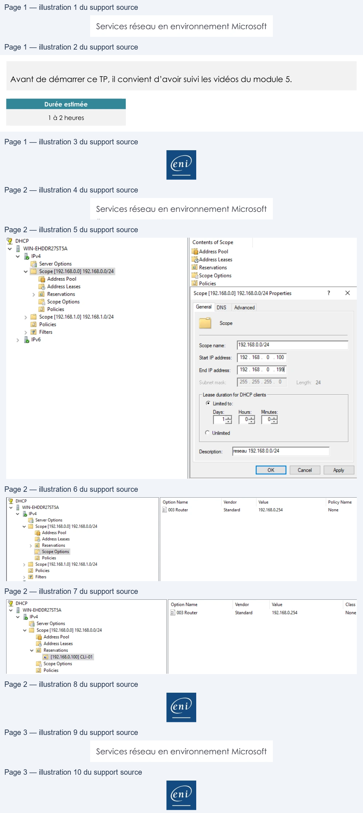

Transcription du document du Drive TSSR. La mise en forme est adaptée au Web ; les compléments IA du portail sont présentés séparément.
Services réseau en environnement Microsoft
TP du Module 05 – Le service DHCP
Avant de démarrer ce TP, il convient d’avoir suivi les vidéos du module 5.
Durée estimée
1 à 2 heures
Prérequis :
•
Avoir réalisé le TP précédent du Module 04.
Création des machines virtuelles :
•
Une machine virtuelle cliente Windows 10 sur le réseau VmNet10.
•
Une machine virtuelle serveur Windows 2019 Standard sur le réseau VmNet10.
Installation du service DHCP
•
Définir un nouveau plan d’adressage pour votre réseau VmNet10 avec :
o Une plage de 100 adresses pour les postes clients. o Les adresses statiques pour les serveurs. • Configurer le service DHCP sur le nouveau serveur Windows 2019 Standard pour :
o Fournir des adresses IP sur les postes clients. o Fournir l’ensemble des paramètres IP nécessaires aux postes clients. o Ne pas fournir les adresses IP prévues pour les serveurs (configuration
statique).
Page 1/3
© ENI – Tous droits réservés
Services réseau en environnement Microsoft
Paramétrage des clients :
•
Adapter les paramètres clients :
o Configurer une réservation pour le 2ème poste client avec la 1ère adresse IP de
la plage d’adresses définie.
Page 2/3
© ENI – Tous droits réservés
& DHCP
Contents of Scope
vi ~~
[Address Pool
vv
de
.
Addi
Li
v [1 Scope [192.168.0.0] 192.168.0.0/24
en
-
(@ Address Pool
Scope Options
Hé, Address Leases
IE Policies
> El Reservations
Scope [192.168.0.0] 192.168.0.0/24 Properties
?
x
[M Scope Options
(GB) Policies
General
DNS
Advanced
> 1 Scope [192.168.1.0] 192.168.1.0/24
a
(@ Policies
Scope
> & Filters
> BIP6
Scope name:
192.168.0.0/24
Start
IP address:
|192.168.
0 . 100
End IP address:
| 192.168.
0
. 199]
Subnet mask
255 .255.
255.
0
Length:
24
Lease duration for DHCP clients
© Limited to:
Days:
Hours:
Minutes:
14
[oS]
[03
© Unlimited
Description:
reseau 192.168.0.0/24
@ DHCP
Option Name
Vendor
Value
Policy Name
vi ~~
{E003 Router
Standard
192.168.0254
None
v
(G3 Server Options
v D Scope [192.168.0.0] 192.168.0.0/24
1 Address Pool
H Address Leases
> © Reservations
© Scope Options
(@ Policies
> D Scope [192.168.1.0] 192.168.1.0/24
@ Policies
> @ Filters
@ DHCP
Option Name
Vendor
Value
Class
va~~
(:] 003 Router
Standard
192,168,0.254
None
v
|
[3 Server Options
v Di Scope [192.168.0.0] 192.168.0.0/24
[Address Pool
Dé Address Leases
v El Reservations
(©) 1192.168.0.100] CLI-01
DE, Scope Options
(Gi Policies
ent
Services réseau en environnement Microsoft
•
Sur un poste client, utiliser la commande ipconfig pour :
o Renouveler le bail DHCP (sans perdre l’adresse IP obtenue). o Relâcher et obtenir une nouvelle adresse IP.
Page 3/3
© ENI – Tous droits réservés
